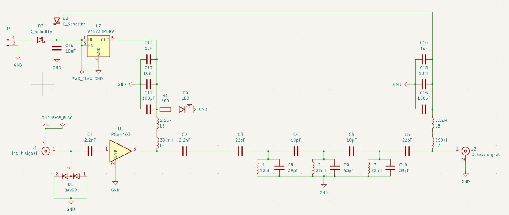
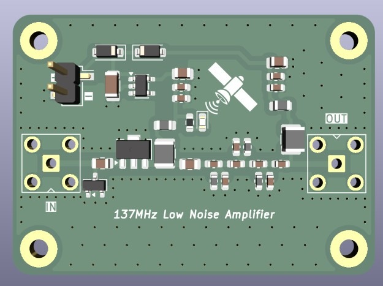
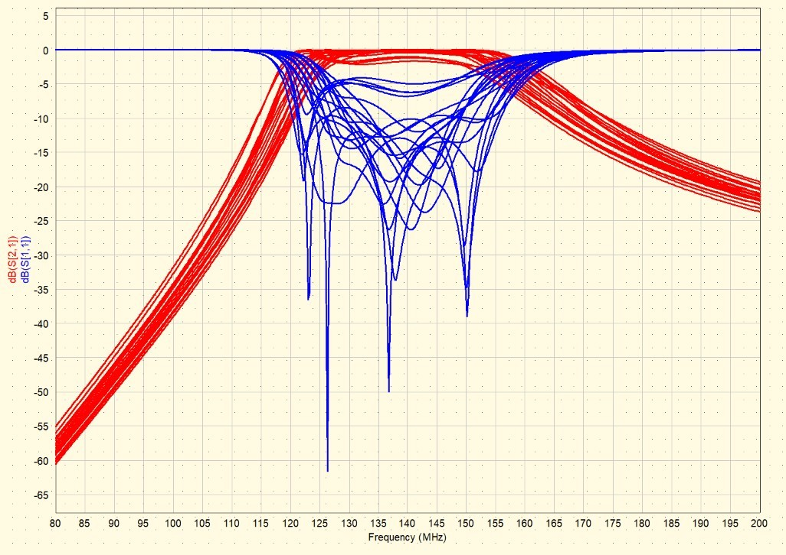
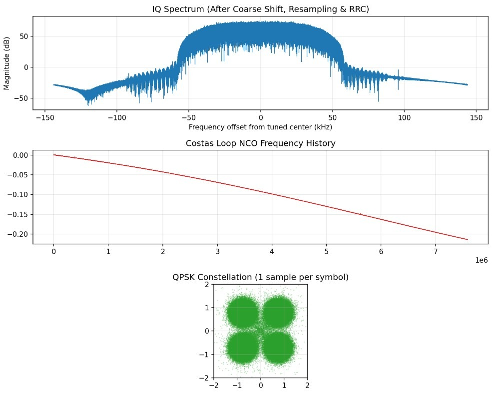

Goal
Receive and decode LRPT (Low Rate Picture Transmission) imagery from Meteor-M2, starting from a custom-designed front end rather than an off-the-shelf filter and amplifier.
System overview
Front-end design
The board combines a PGA-103+ low-noise amplifier with a 3-pole, direct-coupled Chebyshev bandpass filter using series-capacitor coupling and 0.10 dB passband ripple. The filter keeps strong out-of-band signals, like FM broadcast and pagers, from overloading the receiver, and the LNA sets the noise figure for the whole chain.


Verifying before fabrication
Real capacitors and inductors are never exactly their labeled value. I ran Monte Carlo tolerance analysis in Qucs to see how the filter response spreads across component tolerances, and cross-checked with AC simulations in LTspice that include parasitics. That way I know the design still works with real parts before paying for boards.

Decoding pipeline
The RTL-SDR V4 records raw IQ samples during a satellite pass. A Python decoder takes the recording from IQ samples down to CCSDS packets:
- Demodulation: coarse frequency correction, resampling to 4 samples per symbol, RRC matched filtering (α = 0.6) and AGC. The top plot shows the filtered signal sitting about ±55 kHz around center, well above the noise floor.
- Timing and carrier recovery: a Gardner loop picks the symbol instants and drops the rate to one sample per symbol, then a QPSK Costas loop tracks the carrier. Its NCO frequency history (middle plot) shows a steady drift, consistent with Doppler shift over the pass. The four tight clusters in the constellation (bottom plot) show both loops locked.
- Frame sync: a correlation search for the convolutionally encoded sync word across all four phase rotations and I/Q swap resolves the QPSK phase ambiguity and finds the start of each frame.
- Channel decoding: a Viterbi decoder for the rate 1/2, K = 7 convolutional code (compiled with Numba, about 1200× faster than CommPy's pure-Python decoder), then CCSDS descrambling and Reed-Solomon (255, 223) error correction.
- Packet extraction: the corrected frames are parsed into CCSDS packets and sorted by channel (APID), and image packets are mapped to their row positions in the picture.

What's next
- Finish the image: implement JPEG decompression of the image data so the received rows become an actual weather picture.
- Build and test the board: fabricate the front end, measure its gain and S21, and compare against the Qucs and LTspice simulations.
- Full system test: capture a live Meteor-M2 pass through the custom front end and decode it end to end.